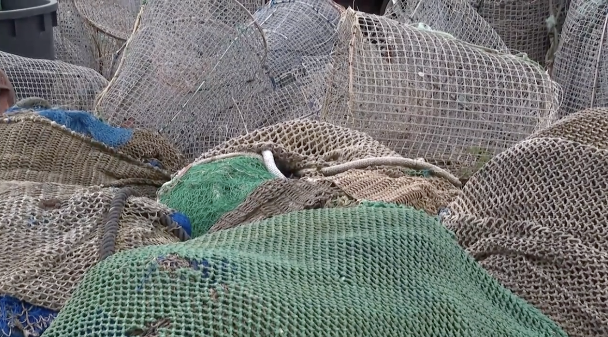

Podrán salir a faenar 130 días en 2025 si adaptan su flota y utilizar redes de 45 mm en el caso de la pesca costera y de 55 mm para la de profundidad
Los ministros de Pesca de la Unión Europea han logrado este miércoles cerrar por unanimidad un acuerdo sobre el reparto de las cuotas pesqueras en las aguas comunitarias para el año que viene. La gran batalla ha estado centrada en el Mediterráneo. En un principio, la Comisión Europea había propuesto reducir en un 79% los días de pesca.
El sindicato registra en el Congreso de los Diputados centenares de quejas de los mutualistas para denunciar retrasos, anulaciones y suspensiones de las citas médicas.

Los sindicatos mantienen la presión contra el Gobierno a cuenta de la crisis de Muface. El sindicato CSIF -uno de los mayoritarios entre los funcionarios- ha registrado en el Congreso de los Diputados "centenares de quejas de los mutualistas por los retrasos, anulaciones y suspensiones de citas". Como ya hiciera el pasado lunes en el Defensor del Pueblo, han expuesto esta denuncia en la Cámara Baja para solicitar a los grupos parlamentarios que "presenten iniciativas para garantizar que los empleados públicos reciben una asistencia sanitaria de calidad".